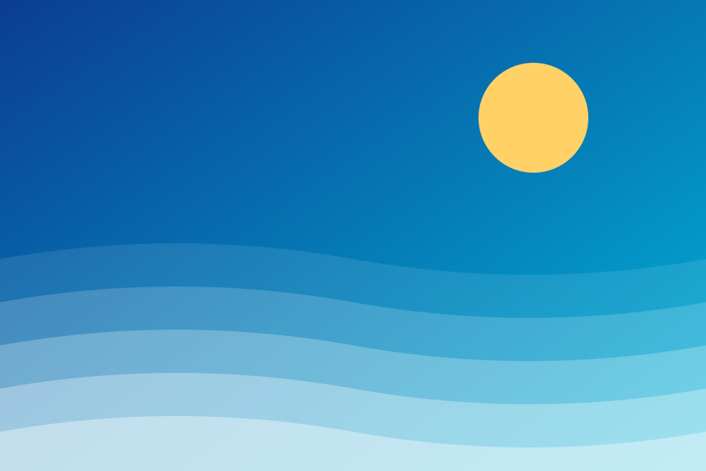
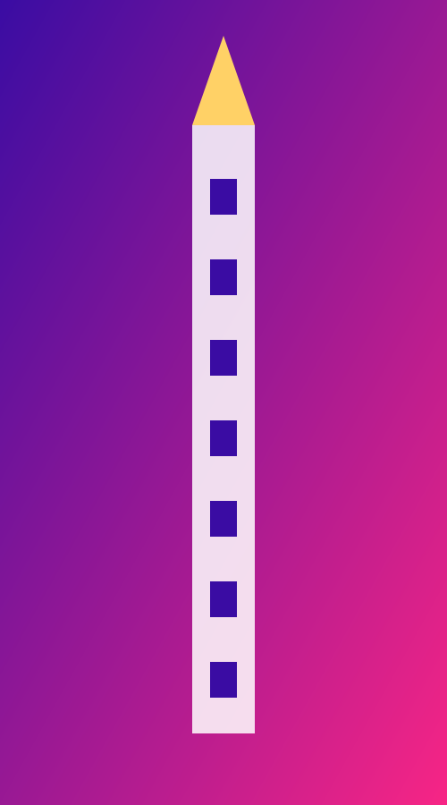
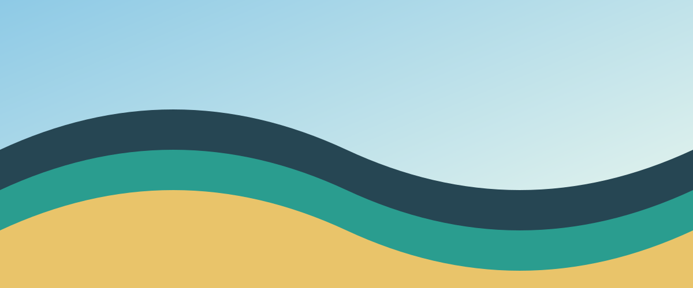
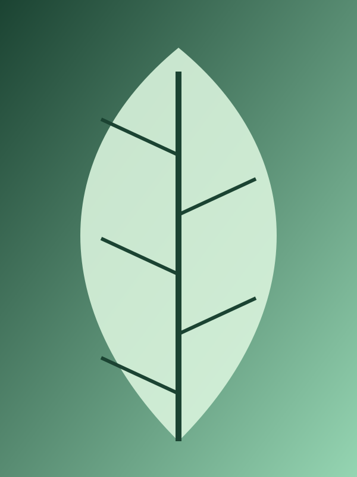
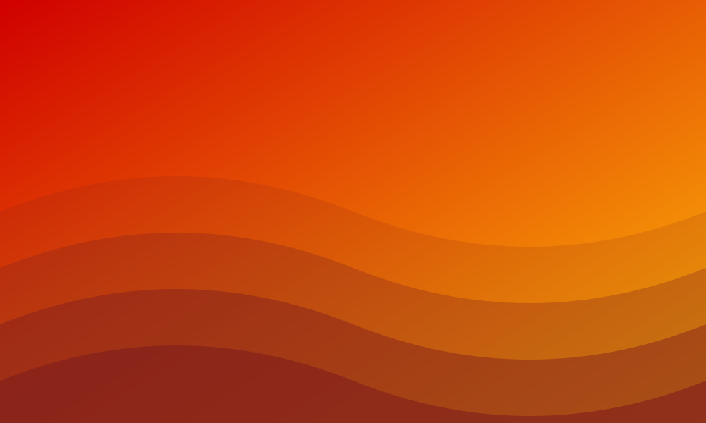

Using the CellNav plugin
Every navbar on this page is shown under the exact HTML that makes it. Edit any code block and the navbar updates as you type.
Step 1 · Add the script, once per page
This is the only thing added to the site. The default font is inside the file.
Step 2 · Use the tag with ordinary links inside
If the script is missing or fails, these stay on the page as a normal list of
links. stretch makes the cells wider and seed picks a layout.
With no warp given, every word is bent to fill its whole cell.
Step 3 · Or give the items and the look as attributes
items is a comma-separated list, margin is the gap between
cells, padding keeps the text off the cell walls (both in pixels), and
palette is the cell colors in order.
Step 4 · Same tag, items with real URLs
items also takes JSON when each item needs its own link.
Step 5 · Loosen it for a homemade look
The same navbar as step 2 with warp lowered. At warp="1" (the
default) text is bent to fill the cell; at 0 it sits upright in a plain
rectangle. In between, the letters sit a little crooked, which gives it a
deliberately rough, hand-made feel. It's opt-in.
Step 6 · A different layout every time
seed is a number by default, so the same number always gives the same
cells. Set seed="random" and each visitor gets a fresh layout on every
page load. Use the button to try seeds here: it writes the seed it picked into the
code, so you can keep the one you like.
Step 7 · Even or organic cells
By default the seeds are evened out (25 rounds of relaxation), so the cells come out
similar in size and the pattern looks tidy and symmetrical. Add organic
and the seeds are scattered at random with only a minimum gap between them: cells
vary in size and shape, like your original prototype. Both blocks below use the same
items and seed. relaxation="3" sets the amount of evening-out directly
(0 = none).
Step 8 · Set the boundary
By default the cells fill the whole box. boundary gives them an outer
shape instead: a preset name (rounded, ellipse,
circle, hexagon, diamond) or an SVG path. The
path is stretched to fill the width and height box. The
area outside stays empty, so the page behind shows through and clicks there do
nothing. boundary-stroke draws the outline.
A path works the same way. This one is a slanted banner, and as with everything else you can edit it live.
Step 9 · Concave shapes
The boundary can have dents: a star, a heart, an L, an arrow. The cells fill the shape, and a cell that gets bent around a dent keeps its own seed, so it stays one connected piece. In a cell that is only gently dented the word is bent onto the cell's own outline, so its letters follow the curves; in a deeply dented one (the tip of a star, say) the word goes in the cell's biggest convex part instead, because bending a word through such a notch would throw its letters out of the cell. The only rule is that the outline can't cross itself.
Step 10 · Behavior: hover, current page, keyboard and events
Every cell is a real link. Hover or tab to one and it lightens and gets an outline;
Tab moves between cells and Enter follows the link. The current item
is outlined and marked aria-current="page". Set it with
active="projects" (an item id), or with active="auto" to
follow the address: in this first one, click a cell and the page address changes,
and the outline follows.
A click sends a cellnav-navigate event (with the item's id, label and
href) before the browser follows the link. Call preventDefault() to
handle routing yourself, as a single-page app would. The handler below is the real
code running on this page: it stops the jump and moves the outline itself, on the
nav marked data-router. Whatever you click is logged underneath.
events appear here when you click a cell above
Theming uses CSS custom properties on the tag, so a site can match its own style:
--cellnav-ink (outline colour), --cellnav-ring-width and
--cellnav-hover-brightness.
Step 11 · Pictures instead of text
Put a picture in each link and set fill="image". Each picture is scaled
to cover its cell and clipped to the cell's shape. The label appears on hover or
focus (and always on touch screens, which can't hover). A picture's proportions
come from its width and height attributes; if those are
missing, as on the last picture below, it is measured once it loads.
The cells can lean towards their pictures' proportions: wide pictures get wider
cells and tall ones get taller cells. aspect-blend sets how far, from
0 (every cell keeps the layout's shape) to 1 (as close to the picture as the layout
allows). It is the same six pictures and the same seed each time, at 0, the default
0.5, and 1:






Matching a picture's proportions isn't enough on its own: a picture is a rectangle,
so a wedge-shaped cell with the right proportions still hides most of it.
shape-fit (0 to 1, default 1) also pushes each cell towards a
rectangle, so more of its picture shows. The one above is the default; this is the
same navbar with it switched off, so you can compare. Cells are straight-edged
shapes, so this steers them rather than making them exact rectangles.
labels="always" keeps the labels visible, and
labels="none" hides them (each cell still has its label for screen
readers). A boundary works with pictures too.
Step 12 · Perlin-noise effects
An effect distorts the letters, the cell outlines, or both. Add
noise to switch the noise effect on. It is frozen by default: a rough,
hand-drawn look. noise-speed above 0 makes it move.
noise-amount is how far points move (px), noise-scale the
size of the wobbles (px). Turn the amount up and the letters get harder to read, and
a larger scale smooths the wobble out. Two presets give a starting look:
noise="jitter" (small and quick, like the original prototype) and
noise="wobble" (slow and large).
Always moving, with the jitter preset. It respects "reduce motion" in
the visitor's system settings (it freezes), pauses while off-screen, and stops when
removed from the page.
Three kinds of jitter
noise-mode picks how points move. By default each point gets its own
noise. shear moves x by the noise of y and y by the noise of
x, with the same noise for both, as the prototype did: a shape only slides
sideways, so strokes keep their thickness. swell is the opposite: x
moves by the noise of x and y by the noise of y, so strokes pinch and bulge. Same
settings, same seed, in that order (default, shear, swell):
Bigger without spikier
Turning noise-amount up on its own squeezes the same wiggle into the
same width, so it gets steeper and spikier. noise-size zooms the whole
wobble instead: the moves and the width of the waves grow together, so it is the
same wobble, only bigger (noise-size="2" is exactly the default wobble
seen from twice as close). The first navbar is the default, the second is size 2.5,
and the third raises noise-amount by the same 2.5 for comparison:
Which cells it applies to
noise-on picks the cells: all (the default),
hover (the cell under the pointer, or with keyboard focus),
active (the current item), or item ids, in a list if you like. A cell
fades the effect in and out over noise-ease milliseconds (200 by
default), and nothing runs at all until a cell is hovered. Hover each of these:
Letters, outlines, or both
noise-target is text (the default), cells (the
outlines, including a picture's clip and the hover outline) or both.
Noise depends only on position, so neighbouring cells never pull apart.
Several effects, and your own
The effects attribute takes a JSON list, so effects stack, and it
accepts any effect type, including ones you register in code. Here is a whole new
effect, shake, registered with one function (this is the real code
running on this page), and then used from HTML by name:
Two effects stacked: slow outlines all the time, and a quick jitter on hover.
In code, the same thing reads
cellNav(items).effect(noise({ preset: "wobble", on: "hover" })), and an
unknown effect name is reported as an error instead of being ignored.
Step 13 · No cell backgrounds
background="none" draws no cell at all and puts the cell's colour on the
text instead. The cells are still there: they take clicks, tint faintly on hover and
focus, and show the outline for the current page (set --cellnav-ink to
a light colour on a dark page, as here). The colours come from the palette, so on a
light page pale ones like the default yellow will be hard to read. A dark page suits
them. This only applies to text cells: a picture cell's picture is its fill.
With a palette of your own, and the effects work as usual:
Step 14 · One word in one shape
A navbar with a single item and a boundary is one cell that fills the
whole shape, so a word bent to fit a shape needs no new machinery. Use
margin="0" so there is no gap at the edge. The shapes to choose from are
rectangle, rounded, ellipse, circle,
hexagon, diamond, triangle, pentagon,
star, heart, cross, arrow and
drop, or any SVG path. In the builder, the same thing is one call:
textInShape("LOVE", "heart", { color: "#ff006e" }).
A shape that is about as wide as it is tall has no longest direction, so its word
reads horizontally. The word is stretched to fill the shape, so a short word works
best. Letter outlines get as many points as the size needs, so curves stay smooth
however big the word is bent; text-detail sets the longest stretch of
outline in pixels (2.5 by default), if you want it finer or lighter.
A shape with a gentle dent, like the heart, is fine: the word is bent onto the heart's own outline, so its letters follow the curves. A deeply dented shape (a plus sign, an arrow, a star) puts the word in its biggest convex part instead, because bending a word through those notches would throw its letters out of the shape.
To fill a deeply dented shape part by part, add text-flow="spread". The
shape is cut into convex pieces and the word is broken across them like line breaks,
so the plus sign below is filled arm by arm instead of only along one bar. Where a
phrase has spaces, the breaks prefer them: "I LOVE YOU" breaks between its words
rather than inside one, whenever a space is close to where a break would fall. A
shape without dents is unaffected, and a star's arms are too thin to hold letters
well, so it gains little.
With background="none" the shape is empty and the word takes the colour,
and boundary-stroke draws the outline: